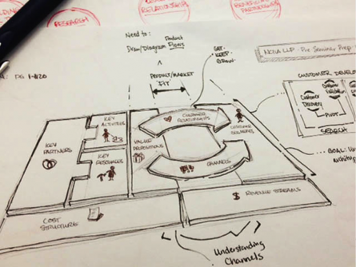

Visual Communications for Sustainability
Eco-careers
Feb 26, 2014

Eco-careers
Feb 26, 2014
Innovation and Entrepreneurship
Nov 13, 2013
Biomimicry
Feb 20, 2014

Green Graphic & Packaging Design
Feb 10, 2014

Innovation & Entrepreneurship
Jan 30, 2014

About the MA Program
Jan 15, 2014

About the MA Program
Dec 19, 2013

Natural Leadership
Oct 20, 2013

Innovation & Entrepreneurship
Aug 15, 2013

Natural Leadership
Sep 17, 2013